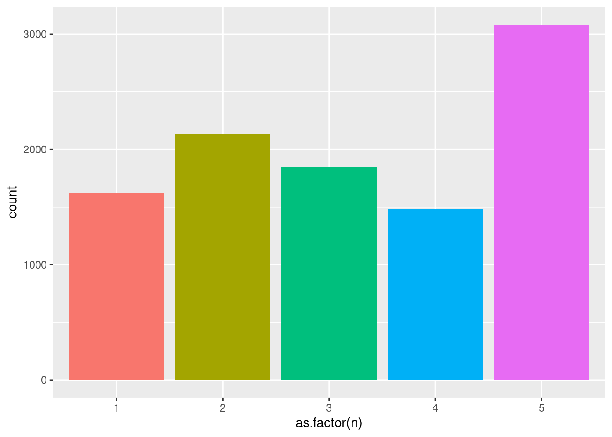
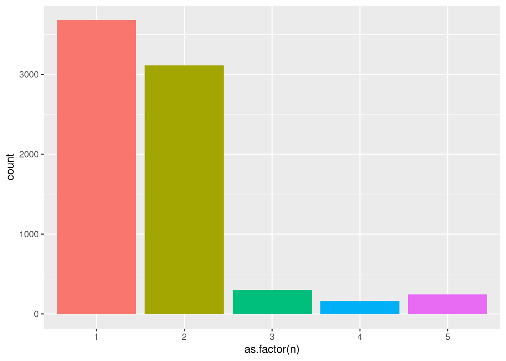
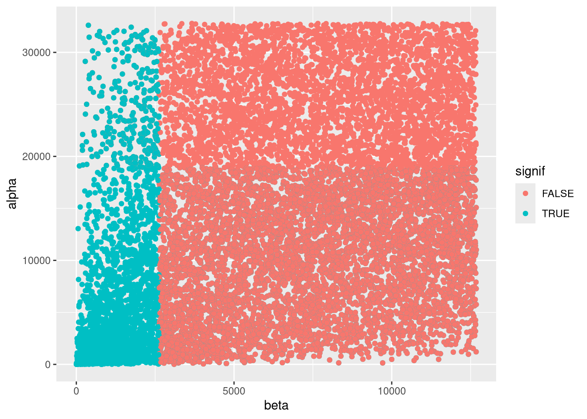

Last updated: 2026-04-16
Checks: 7 0
Knit directory: methyl_nano_cf/analysis/
This reproducible R Markdown analysis was created with workflowr (version 1.7.1). The Checks tab describes the reproducibility checks that were applied when the results were created. The Past versions tab lists the development history.
Great! Since the R Markdown file has been committed to the Git repository, you know the exact version of the code that produced these results.
Great job! The global environment was empty. Objects defined in the global environment can affect the analysis in your R Markdown file in unknown ways. For reproduciblity it’s best to always run the code in an empty environment.
The command set.seed(20250606) was run prior to running
the code in the R Markdown file. Setting a seed ensures that any results
that rely on randomness, e.g. subsampling or permutations, are
reproducible.
Great job! Recording the operating system, R version, and package versions is critical for reproducibility.
Nice! There were no cached chunks for this analysis, so you can be confident that you successfully produced the results during this run.
Great job! Using relative paths to the files within your workflowr project makes it easier to run your code on other machines.
Great! You are using Git for version control. Tracking code development and connecting the code version to the results is critical for reproducibility.
The results in this page were generated with repository version c910ead. See the Past versions tab to see a history of the changes made to the R Markdown and HTML files.
Note that you need to be careful to ensure that all relevant files for
the analysis have been committed to Git prior to generating the results
(you can use wflow_publish or
wflow_git_commit). workflowr only checks the R Markdown
file, but you know if there are other scripts or data files that it
depends on. Below is the status of the Git repository when the results
were generated:
Ignored files:
Ignored: .Rproj.user/
Ignored: analysis/.RData
Untracked files:
Untracked: renv.lock
Untracked: renv/
Unstaged changes:
Modified: .Rprofile
Modified: _workflowr.yml
Modified: analysis/00_importantObjects.Rmd
Modified: analysis/diffAlphaUsageAll.Rmd
Modified: analysis/runOpTiles.Rmd
Note that any generated files, e.g. HTML, png, CSS, etc., are not included in this status report because it is ok for generated content to have uncommitted changes.
These are the previous versions of the repository in which changes were
made to the R Markdown
(analysis/deAnalysisWithDtuRegion.Rmd) and HTML
(docs/deAnalysisWithDtuRegion.html) files. If you’ve
configured a remote Git repository (see ?wflow_git_remote),
click on the hyperlinks in the table below to view the files as they
were in that past version.
| File | Version | Author | Date | Message |
|---|---|---|---|---|
| Rmd | c910ead | caitlinpage | 2026-04-16 | wflow_publish("deAnalysisWithDtuRegion.Rmd") |
library(annotatr)Warning: replacing previous import 'S4Arrays::makeNindexFromArrayViewport' by
'DelayedArray::makeNindexFromArrayViewport' when loading 'SummarizedExperiment'library(data.table)
library(plyranges)Loading required package: BiocGenerics
Attaching package: 'BiocGenerics'The following objects are masked from 'package:stats':
IQR, mad, sd, var, xtabsThe following objects are masked from 'package:base':
anyDuplicated, aperm, append, as.data.frame, basename, cbind,
colnames, dirname, do.call, duplicated, eval, evalq, Filter, Find,
get, grep, grepl, intersect, is.unsorted, lapply, Map, mapply,
match, mget, order, paste, pmax, pmax.int, pmin, pmin.int,
Position, rank, rbind, Reduce, rownames, sapply, saveRDS, setdiff,
table, tapply, union, unique, unsplit, which.max, which.minLoading required package: IRangesLoading required package: S4VectorsLoading required package: stats4
Attaching package: 'S4Vectors'The following objects are masked from 'package:data.table':
first, secondThe following object is masked from 'package:utils':
findMatchesThe following objects are masked from 'package:base':
expand.grid, I, unname
Attaching package: 'IRanges'The following object is masked from 'package:data.table':
shiftLoading required package: GenomicRangesLoading required package: GenomeInfoDb
Attaching package: 'plyranges'The following object is masked from 'package:IRanges':
sliceThe following object is masked from 'package:data.table':
betweenThe following object is masked from 'package:stats':
filterlibrary(tidyr)
Attaching package: 'tidyr'The following object is masked from 'package:S4Vectors':
expandlibrary(stringr)
library(dplyr)
Attaching package: 'dplyr'The following objects are masked from 'package:plyranges':
between, n, n_distinctThe following objects are masked from 'package:GenomicRanges':
intersect, setdiff, unionThe following object is masked from 'package:GenomeInfoDb':
intersectThe following objects are masked from 'package:IRanges':
collapse, desc, intersect, setdiff, slice, unionThe following objects are masked from 'package:S4Vectors':
first, intersect, rename, setdiff, setequal, unionThe following objects are masked from 'package:BiocGenerics':
combine, intersect, setdiff, unionThe following objects are masked from 'package:data.table':
between, first, lastThe following objects are masked from 'package:stats':
filter, lagThe following objects are masked from 'package:base':
intersect, setdiff, setequal, unionlibrary(ggplot2)
library(edgeR)Loading required package: limma
Attaching package: 'limma'The following object is masked from 'package:BiocGenerics':
plotMAlibrary(TxDb.Hsapiens.UCSC.hg19.knownGene)Loading required package: GenomicFeaturesLoading required package: AnnotationDbiLoading required package: BiobaseWelcome to Bioconductor
Vignettes contain introductory material; view with
'browseVignettes()'. To cite Bioconductor, see
'citation("Biobase")', and for packages 'citation("pkgname")'.
Attaching package: 'AnnotationDbi'The following object is masked from 'package:dplyr':
selectThe following object is masked from 'package:plyranges':
select# all cpg positions
seqs <- seqnames(BSgenome.Hsapiens.UCSC.hg38::BSgenome.Hsapiens.UCSC.hg38)[1:22]
cg_sites <- lapply(seqs, function(x) {
cbind(data.frame(Biostrings::matchPattern("CG", BSgenome.Hsapiens.UCSC.hg38::BSgenome.Hsapiens.UCSC.hg38[[x]])),
seqnames = x
)}) %>% bind_rows()Warning in .local(x, row.names, optional, ...): 'optional' argument was ignored
Warning in .local(x, row.names, optional, ...): 'optional' argument was ignored
Warning in .local(x, row.names, optional, ...): 'optional' argument was ignored
Warning in .local(x, row.names, optional, ...): 'optional' argument was ignored
Warning in .local(x, row.names, optional, ...): 'optional' argument was ignored
Warning in .local(x, row.names, optional, ...): 'optional' argument was ignored
Warning in .local(x, row.names, optional, ...): 'optional' argument was ignored
Warning in .local(x, row.names, optional, ...): 'optional' argument was ignored
Warning in .local(x, row.names, optional, ...): 'optional' argument was ignored
Warning in .local(x, row.names, optional, ...): 'optional' argument was ignored
Warning in .local(x, row.names, optional, ...): 'optional' argument was ignored
Warning in .local(x, row.names, optional, ...): 'optional' argument was ignored
Warning in .local(x, row.names, optional, ...): 'optional' argument was ignored
Warning in .local(x, row.names, optional, ...): 'optional' argument was ignored
Warning in .local(x, row.names, optional, ...): 'optional' argument was ignored
Warning in .local(x, row.names, optional, ...): 'optional' argument was ignored
Warning in .local(x, row.names, optional, ...): 'optional' argument was ignored
Warning in .local(x, row.names, optional, ...): 'optional' argument was ignored
Warning in .local(x, row.names, optional, ...): 'optional' argument was ignored
Warning in .local(x, row.names, optional, ...): 'optional' argument was ignored
Warning in .local(x, row.names, optional, ...): 'optional' argument was ignored
Warning in .local(x, row.names, optional, ...): 'optional' argument was ignoredgenes_txdb <- genes(TxDb.Hsapiens.UCSC.hg19.knownGene) 403 genes were dropped because they have exons located on both strands
of the same reference sequence or on more than one reference sequence,
so cannot be represented by a single genomic range.
Use 'single.strand.genes.only=FALSE' to get all the genes in a
GRangesList object, or use suppressMessages() to suppress this message.genes_txdb <- filter(genes_txdb, seqnames %in% seqs)# load data files
rrbs_alpha_beta <- readRDS("/researchers/caitlin.page/cf_nano/r_output/rrbs_alpha_beta.rds")
gm12878_2 <- readRDS("/researchers/caitlin.page/cf_nano/r_output/rrbs_alpha_beta_rep2.rds")
k562 <- readRDS("/researchers/caitlin.page/cf_nano/r_output/k562_rep1.rds")
k562_2 <- readRDS("/researchers/caitlin.page/cf_nano/r_output/k562_rep2.rds")
# same columns and group samples
cols <- c("read_id", "seqnames", "start", "end", "strand", "meth_pattern", "num_meth", "total", "alpha", "read_start", "read_end", "beta", "sample")
all_samples <- rbind(rrbs_alpha_beta %>% mutate(sample = "b1") %>% .[,cols],
gm12878_2 %>% mutate(sample = "b2") %>% .[,cols],
k562 %>% mutate(sample = "cml1") %>% .[,cols],
k562_2 %>% mutate(sample = "cml2") %>% .[,cols])all_samples_simp <- all_samples %>% distinct(read_id, seqnames, read_start, read_end, strand, sample, alpha)
colnames(all_samples_simp)[3:4] <- c("start", "end")dtu_setup <- find_overlaps(as_granges(all_samples_simp), genes_txdb) %>% data.frame() %>%
mutate(alpha_group = case_when(alpha < 0.2 ~ "x < 0.2",
alpha > 0.8 ~ "x > 0.8",
alpha >= 0.2 & alpha <= 0.4 ~ "0.2 <= x <= 0.4",
alpha > 0.4 & alpha < 0.6 ~ "0.4 < x < 0.6",
TRUE ~ "0.6 <= x <= 0.8"))Warning in .merge_two_Seqinfo_objects(x, y): Each of the 2 combined objects has sequence levels not in the other:
- in 'x': KI270733.1, KI270442.1, GL000225.1, GL000214.1, GL000220.1, KZ208915.1, GL000216.2, KI270724.1, KI270714.1, KI270722.1, KI270723.1, KV766196.1, KI270772.1, KI270712.1, KI270728.1, KQ759762.1, KI270853.1, GL383533.1, KI270821.1, GL000253.2, ML143364.1, KZ208921.1, GL000219.1, KI270830.1, KI270769.1, KI270905.1, KI270832.1, KV766198.1, KI270785.1, KQ458386.1, KI270879.1, KI270880.1, KI270709.1, KI270808.1, GL949752.1, KI270819.1, KI270734.1, KN538364.1, KZ208906.1, KI270750.1, KI270924.1, KI270835.1, KI270736.1, KV880766.1, KI270898.1, KV575244.1, KI270713.1, KI270745.1, ML143375.1, KI270754.1, KI270539.1, KI270913.1, GL000194.1, KN196479.1, KI270847.1, ML143371.1, KI270894.1, GL000257.2, KI270780.1, GL000251.2, KI270878.1, KN196472.1, ML143365.1, KI270784.1, KI270749.1, KI270842.1, KI270725.1, KZ559113.1, KI270438.1, KI270927.1, KI270824.1, KI270729.1, ML143378.1, KI270744.1, KI270937.1, KI270845.1, KN538371.1, KI270856.1, KI270817.1, KI270827.1, KI270834.1, KZ208917.1, KQ031389.1, KI270854.1, KI270857.1, KI270768.1, KI270519.1, KI270816.1, KI270903.1, ML143376.1, KI270860.1, KI270862.1, ML143355.1, KI270735.1, KI270706.1, KI270721.1, ML143358.1, KI270848.1, ML143377.1, KV766193.1, KN196484.1, KI270774.1, GL000252.2, KI270757.1, KI270792.1, KZ559100.1, KZ559109.1, GL000218.1, KI270900.1, KI270804.1, ML143380.1, KZ208922.1, KQ759759.1, GL000258.2, KI270732.1, GL000254.2, KZ559110.1, KI270850.1, KQ090017.1, KI270708.1, KI270873.1, KI270753.1, KI270803.1, GL000221.1, GL000256.2, ML143366.1, GL383563.3, GL383545.1, KI270807.1, KI270467.1, KI270912.1, KI270719.1, KI270738.1, GL000208.1, KI270815.1, GL000008.2, KN538360.1, KV880768.1, GL383546.1, KI270776.1, KQ983258.1, KI270802.1, JH159147.1, KI270831.1, KI270925.1, KI270731.1, KI270871.1, GL383526.1, KI270742.1, KI270926.1, KQ090025.1, KN538370.1, KI270793.1, KI270868.1, KI270896.1, KI270522.1, KI270424.1, KI270811.1, KI270707.1, GL383581.2, KI270775.1, KI270869.1, GL949746.1, ML143372.1, KI270812.1, KI270588.1, KI270822.1, KQ090022.1, KQ090026.1, ML143367.1, GL383532.1, KI270846.1, KN196487.1, GL383534.2, GL383555.2, KV880764.1, GL000224.1, KZ208923.1, KI270907.1, KI270876.1, KI270938.1, KI270797.1, KI270759.1, KI270726.1, GL339449.2, KI270801.1, KN538372.1, KI270743.1, KN538361.1, GL383554.1, GL383567.1, KI270795.1, GL000009.2, KZ559105.1, KI270435.1, KV575243.1, KI270747.1, GL000255.2, KV880763.1, KZ208918.1, KI270730.1, GL383557.1, KI270466.1, GL383550.2, KI270791.1, GL383530.1, KI270509.1, KZ559111.1, ML143344.1, GL383542.1, KI270836.1, KZ208912.1, KI270897.1, KI270877.1, KI270787.1, KI270818.1, ML143343.1, KI270908.1, KQ090024.1, GL949753.2, GL949747.2, GL000250.2, KZ208914.1, KI270861.1, KI270887.1, KI270901.1, KV766194.1, KQ458383.1, KI270825.1, ML143345.1, KI270765.1, KZ559101.1, KI270875.1, KN196476.1, KZ208924.1, KI270844.1, KZ208919.1, KN538363.1, KI270448.1, ML143361.1, KI270786.1, KQ983257.1, KI270798.1, KV880765.1, GL383580.2, KI270855.1, KQ031387.1, KI270716.1, KI270746.1, KI270863.1, KI270751.1, GL383568.1, KQ090020.1, GL383571.1, KI270935.1, KZ208913.1, KQ090023.1, KI270829.1, KZ559107.1, KN538369.1, GL877875.1, KZ208904.1, KI270788.1, KI270517.1, KI270758.1, GL383575.2, ML143360.1, ML143369.1, KI270760.1, KI270770.1, ML143385.1, GL383522.1, GL383577.2, ML143353.1, KZ559108.1, KI270805.1, KI270783.1, KI270833.1, KI270813.1, KI270826.1, KI270781.1, KN196480.1, KI270936.1, KI270777.1, KQ090027.1, KI270870.1, KZ559103.1, GL383528.1, KQ090015.1, KI270465.1, KQ090016.1, KZ208911.1, KI270852.1, KZ208908.1, KI270767.1, KI270538.1, KV766197.1, KI270333.1, ML143352.1, ML143354.1, KI270715.1, KI270839.1, GL949742.1, KI270762.1, KI270874.1, ML143368.1, JH159146.1, KI270789.1, KI270851.1, ML143349.1, KI270910.1, KI270904.1, GL949748.2, KQ090018.1, KQ031388.1, KI270929.1, KI270429.1, KI270800.1, GL383574.1, KZ208916.1, GL949750.2, KI270761.1, ML143363.1, GL383541.1, GL383573.1, KN538368.1, GL383520.2, KI270584.1, KI270510.1, GL383527.1, GL000213.1, ML143374.1, GL383519.1, ML143373.1, KI270717.1, KI270881.1, KI270911.1, KI270934.1, KI270806.1, ML143347.1, KI270782.1, KV766199.1, KI270840.1, GL383579.2, GL949751.2, KZ208920.1, KI270711.1, KI270756.1, KI270893.1, KI270779.1, KI270741.1, GL383531.1, GL383583.2, GL383566.1, KI270710.1, KI270330.1, GL000205.2, KN196473.1, KI270718.1, KI270311.1, KI270304.1, GL383556.1, KN196475.1, KI270739.1, KI270720.1, GL383572.1, KI270521.1, KI270591.1, KI270809.1, KQ090021.1, KI270310.1, KN538373.1, KQ458384.1, KN196474.1, KI270530.1, KI270512.1, KQ458385.1, KI270763.1, KI270737.1, KI270589.1, KI270396.1, KQ090028.1, KI270411.1, KZ559112.1, KI270337.1, KI270303.1, KQ983255.1, GL383578.2, KI270507.1, GL383551.1, KI270919.1, KV766192.1, KQ983256.1, GL383518.1, KI270790.1, KN538366.1, KI270906.1, KI270366.1, KI270544.1, KN196482.1, KI270866.1, KI270583.1, JH636055.2, KZ208905.1, KI270841.1, KI270849.1, KI270810.1, KI270340.1, KN196478.1, KQ031385.1, KN196486.1, ML143359.1, KV575258.1, KZ208910.1, KV575249.1, KN196481.1, KI270883.1, KZ559115.1, KZ559102.1, GL949749.2, KI270766.1, KI270858.1, ML143342.1, KI270895.1, KQ031383.1, ML143370.1, KV766195.1, GL383553.2, KI270922.1, KQ031390.1, KI270917.1
- in 'y': chr1_gl000191_random, chr1_gl000192_random, chr4_ctg9_hap1, chr4_gl000193_random, chr4_gl000194_random, chr6_apd_hap1, chr6_cox_hap2, chr6_dbb_hap3, chr6_mann_hap4, chr6_mcf_hap5, chr6_qbl_hap6, chr6_ssto_hap7, chr7_gl000195_random, chr8_gl000196_random, chr8_gl000197_random, chr9_gl000198_random, chr9_gl000199_random, chr9_gl000200_random, chr9_gl000201_random, chr11_gl000202_random, chr17_ctg5_hap1, chr17_gl000203_random, chr17_gl000204_random, chr17_gl000205_random, chr17_gl000206_random, chr18_gl000207_random, chr19_gl000208_random, chr19_gl000209_random, chr21_gl000210_random, chrUn_gl000211, chrUn_gl000212, chrUn_gl000213, chrUn_gl000214, chrUn_gl000215, chrUn_gl000216, chrUn_gl000217, chrUn_gl000218, chrUn_gl000219, chrUn_gl000220, chrUn_gl000221, chrUn_gl000222, chrUn_gl000223, chrUn_gl000224, chrUn_gl000225, chrUn_gl000226, chrUn_gl000227, chrUn_gl000228, chrUn_gl000229, chrUn_gl000230, chrUn_gl000231, chrUn_gl000232, chrUn_gl000233, chrUn_gl000234, chrUn_gl000235, chrUn_gl000236, chrUn_gl000237, chrUn_gl000238, chrUn_gl000239, chrUn_gl000240, chrUn_gl000241, chrUn_gl000242, chrUn_gl000243, chrUn_gl000244, chrUn_gl000245, chrUn_gl000246, chrUn_gl000247, chrUn_gl000248, chrUn_gl000249
Make sure to always combine/compare objects based on the same reference
genome (use suppressWarnings() to suppress this warning).# count the occurence of the region+alpha ("transcript")
dtu_setup <- dtu_setup %>%
mutate(transcript = paste0(gene_id, "_", alpha_group)) %>%
group_by(sample, transcript) %>%
summarise(transcript_count = n()) %>% ungroup() %>% data.frame()`summarise()` has grouped output by 'sample'. You can override using the
`.groups` argument.mat <- dtu_setup %>% pivot_wider(names_from = sample, values_from = transcript_count)
mat[is.na(mat)] <- 0y <- DGEList(mat[,2:5], group = c(1,1,2,2), genes = mat[,1])
keep <- filterByExpr(y)
y <- y[keep,,keep.lib.sizes = FALSE]
y <- normLibSizes(y)
design <- model.matrix(~ c(1,1,2,2), data = y$samples)
fit <- glmQLFit(y, design, robust=TRUE)
qlf <- glmQLFTest(fit, coef = 2)de_res <- topTags(qlf, n = Inf)
de_res <- de_res$table
de_res %>% filter(FDR < 0.05) %>% nrow()[1] 18928de_res %>% mutate(region_id = transcript) %>% separate_wider_delim(transcript, delim = "_", names = c("gene_id", "group")) %>%
group_by(gene_id) %>% summarise(n=n()) %>%
ggplot(aes(x = as.factor(n), fill = as.factor(n))) +
geom_bar() +
theme(legend.position = "none")
all_samples_simp <- all_samples %>% distinct(seqnames, start, beta, sample)
all_samples_simp$end <- all_samples_simp$start + 1
dtu_setup <- find_overlaps(as_granges(all_samples_simp), genes_txdb) %>% data.frame() %>%
mutate(beta_group = case_when(beta < 0.2 ~ "x < 0.2",
beta > 0.8 ~ "x > 0.8",
beta >= 0.2 & beta <= 0.4 ~ "0.2 <= x <= 0.4",
beta > 0.4 & beta < 0.6 ~ "0.4 < x < 0.6",
TRUE ~ "0.6 <= x <= 0.8"))Warning in .merge_two_Seqinfo_objects(x, y): Each of the 2 combined objects has sequence levels not in the other:
- in 'x': KI270733.1, KI270442.1, GL000225.1, GL000214.1, GL000220.1, KZ208915.1, GL000216.2, KI270724.1, KI270714.1, KI270722.1, KI270723.1, KV766196.1, KI270772.1, KI270712.1, KI270728.1, KQ759762.1, KI270853.1, GL383533.1, KI270821.1, GL000253.2, ML143364.1, KZ208921.1, GL000219.1, KI270830.1, KI270769.1, KI270905.1, KI270832.1, KV766198.1, KI270785.1, KQ458386.1, KI270879.1, KI270880.1, KI270709.1, KI270808.1, GL949752.1, KI270819.1, KI270734.1, KN538364.1, KZ208906.1, KI270750.1, KI270924.1, KI270835.1, KI270736.1, KV880766.1, KI270898.1, KV575244.1, KI270713.1, KI270745.1, ML143375.1, KI270754.1, KI270539.1, KI270913.1, GL000194.1, KN196479.1, KI270847.1, ML143371.1, KI270894.1, GL000257.2, KI270780.1, GL000251.2, KI270878.1, KN196472.1, ML143365.1, KI270784.1, KI270749.1, KI270842.1, KI270725.1, KZ559113.1, KI270438.1, KI270927.1, KI270824.1, KI270729.1, ML143378.1, KI270744.1, KI270937.1, KI270845.1, KN538371.1, KI270856.1, KI270817.1, KI270827.1, KI270834.1, KZ208917.1, KQ031389.1, KI270854.1, KI270857.1, KI270768.1, KI270519.1, KI270816.1, KI270903.1, ML143376.1, KI270860.1, KI270862.1, ML143355.1, KI270735.1, KI270706.1, KI270721.1, ML143358.1, KI270848.1, ML143377.1, KV766193.1, KN196484.1, KI270774.1, GL000252.2, KI270757.1, KI270792.1, KZ559100.1, KZ559109.1, GL000218.1, KI270900.1, KI270804.1, ML143380.1, KZ208922.1, KQ759759.1, GL000258.2, KI270732.1, GL000254.2, KZ559110.1, KI270850.1, KQ090017.1, KI270708.1, KI270873.1, KI270753.1, KI270803.1, GL000221.1, GL000256.2, ML143366.1, GL383563.3, GL383545.1, KI270807.1, KI270467.1, KI270912.1, KI270719.1, KI270738.1, GL000208.1, KI270815.1, GL000008.2, KN538360.1, KV880768.1, GL383546.1, KI270776.1, KQ983258.1, KI270802.1, JH159147.1, KI270831.1, KI270925.1, KI270731.1, KI270871.1, GL383526.1, KI270742.1, KI270926.1, KQ090025.1, KN538370.1, KI270793.1, KI270868.1, KI270896.1, KI270522.1, KI270424.1, KI270811.1, KI270707.1, GL383581.2, KI270775.1, KI270869.1, GL949746.1, ML143372.1, KI270812.1, KI270588.1, KI270822.1, KQ090022.1, KQ090026.1, ML143367.1, GL383532.1, KI270846.1, KN196487.1, GL383534.2, GL383555.2, KV880764.1, GL000224.1, KZ208923.1, KI270907.1, KI270876.1, KI270938.1, KI270797.1, KI270759.1, KI270726.1, GL339449.2, KI270801.1, KN538372.1, KI270743.1, KN538361.1, GL383554.1, GL383567.1, KI270795.1, GL000009.2, KZ559105.1, KI270435.1, KV575243.1, KI270747.1, GL000255.2, KV880763.1, KZ208918.1, KI270730.1, GL383557.1, KI270466.1, GL383550.2, KI270791.1, GL383530.1, KI270509.1, KZ559111.1, ML143344.1, GL383542.1, KI270836.1, KZ208912.1, KI270897.1, KI270877.1, KI270787.1, KI270818.1, ML143343.1, KI270908.1, KQ090024.1, GL949753.2, GL949747.2, GL000250.2, KZ208914.1, KI270861.1, KI270887.1, KI270901.1, KV766194.1, KQ458383.1, KI270825.1, ML143345.1, KI270765.1, KZ559101.1, KI270875.1, KN196476.1, KZ208924.1, KI270844.1, KZ208919.1, KN538363.1, KI270448.1, ML143361.1, KI270786.1, KQ983257.1, KI270798.1, KV880765.1, GL383580.2, KI270855.1, KQ031387.1, KI270716.1, KI270746.1, KI270863.1, KI270751.1, GL383568.1, KQ090020.1, GL383571.1, KI270935.1, KZ208913.1, KQ090023.1, KI270829.1, KZ559107.1, KN538369.1, GL877875.1, KZ208904.1, KI270788.1, KI270517.1, KI270758.1, GL383575.2, ML143360.1, ML143369.1, KI270760.1, KI270770.1, ML143385.1, GL383522.1, GL383577.2, ML143353.1, KZ559108.1, KI270805.1, KI270783.1, KI270833.1, KI270813.1, KI270826.1, KI270781.1, KN196480.1, KI270936.1, KI270777.1, KQ090027.1, KI270870.1, KZ559103.1, GL383528.1, KQ090015.1, KI270465.1, KQ090016.1, KZ208911.1, KI270852.1, KZ208908.1, KI270767.1, KI270538.1, KV766197.1, KI270333.1, ML143352.1, ML143354.1, KI270715.1, KI270839.1, GL949742.1, KI270762.1, KI270874.1, ML143368.1, JH159146.1, KI270789.1, KI270851.1, ML143349.1, KI270910.1, KI270904.1, GL949748.2, KQ090018.1, KQ031388.1, KI270929.1, KI270429.1, KI270800.1, GL383574.1, KZ208916.1, GL949750.2, KI270761.1, ML143363.1, GL383541.1, GL383573.1, KN538368.1, GL383520.2, KI270584.1, KI270510.1, GL383527.1, GL000213.1, ML143374.1, GL383519.1, ML143373.1, KI270717.1, KI270881.1, KI270911.1, KI270934.1, KI270806.1, ML143347.1, KI270782.1, KV766199.1, KI270840.1, GL383579.2, GL949751.2, KZ208920.1, KI270711.1, KI270756.1, KI270893.1, KI270779.1, KI270741.1, GL383531.1, GL383583.2, GL383566.1, KI270710.1, KI270330.1, GL000205.2, KN196473.1, KI270718.1, KI270311.1, KI270304.1, GL383556.1, KN196475.1, KI270739.1, KI270720.1, GL383572.1, KI270521.1, KI270591.1, KI270809.1, KQ090021.1, KI270310.1, KN538373.1, KQ458384.1, KN196474.1, KI270530.1, KI270512.1, KQ458385.1, KI270763.1, KI270737.1, KI270589.1, KI270396.1, KQ090028.1, KI270411.1, KZ559112.1, KI270337.1, KI270303.1, KQ983255.1, GL383578.2, KI270507.1, GL383551.1, KI270919.1, KV766192.1, KQ983256.1, GL383518.1, KI270790.1, KN538366.1, KI270906.1, KI270366.1, KI270544.1, KN196482.1, KI270866.1, KI270583.1, JH636055.2, KZ208905.1, KI270841.1, KI270849.1, KI270810.1, KI270340.1, KN196478.1, KQ031385.1, KN196486.1, ML143359.1, KV575258.1, KZ208910.1, KV575249.1, KN196481.1, KI270883.1, KZ559115.1, KZ559102.1, GL949749.2, KI270766.1, KI270858.1, ML143342.1, KI270895.1, KQ031383.1, ML143370.1, KV766195.1, GL383553.2, KI270922.1, KQ031390.1, KI270917.1
- in 'y': chr1_gl000191_random, chr1_gl000192_random, chr4_ctg9_hap1, chr4_gl000193_random, chr4_gl000194_random, chr6_apd_hap1, chr6_cox_hap2, chr6_dbb_hap3, chr6_mann_hap4, chr6_mcf_hap5, chr6_qbl_hap6, chr6_ssto_hap7, chr7_gl000195_random, chr8_gl000196_random, chr8_gl000197_random, chr9_gl000198_random, chr9_gl000199_random, chr9_gl000200_random, chr9_gl000201_random, chr11_gl000202_random, chr17_ctg5_hap1, chr17_gl000203_random, chr17_gl000204_random, chr17_gl000205_random, chr17_gl000206_random, chr18_gl000207_random, chr19_gl000208_random, chr19_gl000209_random, chr21_gl000210_random, chrUn_gl000211, chrUn_gl000212, chrUn_gl000213, chrUn_gl000214, chrUn_gl000215, chrUn_gl000216, chrUn_gl000217, chrUn_gl000218, chrUn_gl000219, chrUn_gl000220, chrUn_gl000221, chrUn_gl000222, chrUn_gl000223, chrUn_gl000224, chrUn_gl000225, chrUn_gl000226, chrUn_gl000227, chrUn_gl000228, chrUn_gl000229, chrUn_gl000230, chrUn_gl000231, chrUn_gl000232, chrUn_gl000233, chrUn_gl000234, chrUn_gl000235, chrUn_gl000236, chrUn_gl000237, chrUn_gl000238, chrUn_gl000239, chrUn_gl000240, chrUn_gl000241, chrUn_gl000242, chrUn_gl000243, chrUn_gl000244, chrUn_gl000245, chrUn_gl000246, chrUn_gl000247, chrUn_gl000248, chrUn_gl000249
Make sure to always combine/compare objects based on the same reference
genome (use suppressWarnings() to suppress this warning).dtu_setup <- dtu_setup %>%
mutate(transcript = paste0(gene_id, "_", beta_group)) %>%
group_by(sample, transcript) %>%
summarise(transcript_count = n()) %>% ungroup() %>% data.frame()`summarise()` has grouped output by 'sample'. You can override using the
`.groups` argument.mat <- dtu_setup %>% pivot_wider(names_from = sample, values_from = transcript_count)
mat[is.na(mat)] <- 0
y <- DGEList(mat[,2:5], group = c(1,1,2,2), genes = mat[,1])
keep <- filterByExpr(y)
y <- y[keep,,keep.lib.sizes = FALSE]
y <- normLibSizes(y)
design <- model.matrix(~ c(1,1,2,2), data = y$samples)
fit <- glmQLFit(y, design, robust=TRUE)
qlf <- glmQLFTest(fit, coef = 2)de_res_beta <- topTags(qlf, n = Inf)
de_res_beta <- de_res_beta$table
de_res_beta %>% filter(FDR < 0.05) %>% nrow()[1] 2626de_res_beta[1:10,] transcript logFC logCPM F PValue FDR
3094 105_x > 0.8 -3.589639 7.825926 205.8603 1.122332e-09 1.423117e-05
29173 57537_x > 0.8 -4.501929 7.593126 176.5484 3.080796e-09 1.444728e-05
39199 8514_x > 0.8 -3.778246 7.437588 162.4813 5.182491e-09 1.444728e-05
34784 753_x > 0.8 -3.984663 7.274235 160.5880 5.626779e-09 1.444728e-05
41845 9442_x > 0.8 -5.600577 7.087652 154.1779 6.117247e-09 1.444728e-05
29735 5791_x > 0.8 -5.718718 6.547232 140.0195 7.903009e-09 1.444728e-05
22949 5034_x > 0.8 5.785303 7.283803 150.3074 7.975626e-09 1.444728e-05
13806 256536_x > 0.8 -3.040750 8.121952 139.8602 1.331608e-08 1.803637e-05
11728 23040_x > 0.8 -3.994096 6.991843 139.9149 1.355294e-08 1.803637e-05
21427 4147_x > 0.8 2.791788 7.712122 138.4044 1.422426e-08 1.803637e-05de_res_beta %>% mutate(region_id = transcript) %>% separate_wider_delim(transcript, delim = "_", names = c("gene_id", "group")) %>%
group_by(gene_id) %>% summarise(n=n()) %>%
ggplot(aes(x = as.factor(n), fill = as.factor(n))) +
geom_bar() +
theme(legend.position = "none")
rbind(mutate(de_res, type = "alpha"), mutate(de_res_beta, type = "beta")) %>%
group_by(type) %>% mutate(rank = 1:n(), signif = ifelse(FDR < 0.05, TRUE, FALSE)) %>% ungroup() %>%
group_by(transcript) %>% mutate(count = n()) %>% ungroup() %>% filter(count == 2) %>% .[order(.$transcript),] %>%
pivot_wider(names_from = type, values_from = rank) %>% group_by(transcript) %>% fill(alpha) %>% fill(beta, .direction = "up") %>% ungroup() %>%
distinct(transcript, alpha, beta, signif) %>%
ggplot(aes(x = beta, y = alpha, colour = signif)) +
geom_point()
rbind(mutate(de_res, type = "alpha"), mutate(de_res_beta, type = "beta")) %>%
group_by(type) %>% mutate(rank = 1:n()) %>% ungroup() %>%
mutate(region_id = transcript) %>% separate_wider_delim(transcript, delim = "_", names = c("gene_id", "group")) %>%
group_by(region_id) %>% mutate(count = n()) %>% filter(count == 2) %>% .[order(.$gene_id),] %>%
group_by(gene_id, type) %>% summarise(n=n()) %>% .[1:10,]`summarise()` has grouped output by 'gene_id'. You can override using the
`.groups` argument.# A tibble: 10 × 3
# Groups: gene_id [5]
gene_id type n
<chr> <chr> <int>
1 1000 alpha 1
2 1000 beta 1
3 10000 alpha 1
4 10000 beta 1
5 100033447 alpha 1
6 100033447 beta 1
7 100033448 alpha 1
8 100033448 beta 1
9 100048912 alpha 1
10 100048912 beta 1
sessionInfo()R version 4.4.1 (2024-06-14)
Platform: x86_64-pc-linux-gnu
Running under: Red Hat Enterprise Linux 9.6 (Plow)
Matrix products: default
BLAS/LAPACK: FlexiBLAS OPENBLAS-OPENMP; LAPACK version 3.9.0
locale:
[1] LC_CTYPE=en_AU.UTF-8 LC_NUMERIC=C
[3] LC_TIME=en_AU.UTF-8 LC_COLLATE=en_AU.UTF-8
[5] LC_MONETARY=en_AU.UTF-8 LC_MESSAGES=en_AU.UTF-8
[7] LC_PAPER=en_AU.UTF-8 LC_NAME=C
[9] LC_ADDRESS=C LC_TELEPHONE=C
[11] LC_MEASUREMENT=en_AU.UTF-8 LC_IDENTIFICATION=C
time zone: Australia/Melbourne
tzcode source: system (glibc)
attached base packages:
[1] stats4 stats graphics grDevices utils datasets methods
[8] base
other attached packages:
[1] TxDb.Hsapiens.UCSC.hg19.knownGene_3.2.2
[2] GenomicFeatures_1.58.0
[3] AnnotationDbi_1.68.0
[4] Biobase_2.66.0
[5] edgeR_4.4.2
[6] limma_3.62.2
[7] ggplot2_3.5.2
[8] dplyr_1.1.4
[9] stringr_1.5.1
[10] tidyr_1.3.1
[11] plyranges_1.26.0
[12] GenomicRanges_1.58.0
[13] GenomeInfoDb_1.42.3
[14] IRanges_2.40.1
[15] S4Vectors_0.44.0
[16] BiocGenerics_0.52.0
[17] data.table_1.17.8
[18] annotatr_1.32.0
loaded via a namespace (and not attached):
[1] DBI_1.2.3 bitops_1.0-9
[3] rlang_1.1.6 magrittr_2.0.3
[5] git2r_0.36.2 matrixStats_1.5.0
[7] compiler_4.4.1 RSQLite_2.4.2
[9] png_0.1-8 vctrs_0.6.5
[11] reshape2_1.4.4 pkgconfig_2.0.3
[13] crayon_1.5.3 fastmap_1.2.0
[15] dbplyr_2.5.0 XVector_0.46.0
[17] labeling_0.4.3 utf8_1.2.6
[19] Rsamtools_2.22.0 promises_1.3.3
[21] rmarkdown_2.29 tzdb_0.5.0
[23] UCSC.utils_1.2.0 purrr_1.1.0
[25] bit_4.6.0 BSgenome.Hsapiens.UCSC.hg38_1.4.5
[27] xfun_0.52 zlibbioc_1.52.0
[29] cachem_1.1.0 jsonlite_2.0.0
[31] blob_1.2.4 later_1.4.2
[33] DelayedArray_0.32.0 BiocParallel_1.40.2
[35] parallel_4.4.1 R6_2.6.1
[37] bslib_0.9.0 stringi_1.8.7
[39] RColorBrewer_1.1-3 rtracklayer_1.66.0
[41] jquerylib_0.1.4 Rcpp_1.1.0
[43] SummarizedExperiment_1.36.0 knitr_1.50
[45] readr_2.1.5 httpuv_1.6.16
[47] Matrix_1.7-0 tidyselect_1.2.1
[49] rstudioapi_0.17.1 dichromat_2.0-0.1
[51] abind_1.4-8 yaml_2.3.10
[53] codetools_0.2-20 curl_6.4.0
[55] lattice_0.22-6 tibble_3.3.0
[57] regioneR_1.38.0 plyr_1.8.9
[59] withr_3.0.2 KEGGREST_1.46.0
[61] evaluate_1.0.4 BiocFileCache_2.14.0
[63] Biostrings_2.74.1 pillar_1.11.0
[65] BiocManager_1.30.26 filelock_1.0.3
[67] MatrixGenerics_1.18.1 whisker_0.4.1
[69] generics_0.1.4 rprojroot_2.1.0
[71] RCurl_1.98-1.17 BiocVersion_3.20.0
[73] hms_1.1.3 scales_1.4.0
[75] glue_1.8.0 tools_4.4.1
[77] AnnotationHub_3.14.0 BiocIO_1.16.0
[79] locfit_1.5-9.12 BSgenome_1.74.0
[81] GenomicAlignments_1.42.0 fs_1.6.6
[83] XML_3.99-0.18 grid_4.4.1
[85] GenomeInfoDbData_1.2.13 restfulr_0.0.16
[87] cli_3.6.5 rappdirs_0.3.3
[89] workflowr_1.7.1 S4Arrays_1.6.0
[91] gtable_0.3.6 sass_0.4.10
[93] digest_0.6.37 SparseArray_1.6.2
[95] rjson_0.2.23 farver_2.1.2
[97] memoise_2.0.1 htmltools_0.5.8.1
[99] lifecycle_1.0.4 httr_1.4.7
[101] statmod_1.5.1 bit64_4.6.0-1